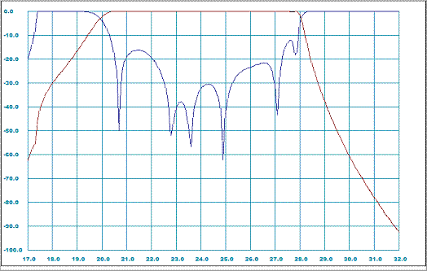
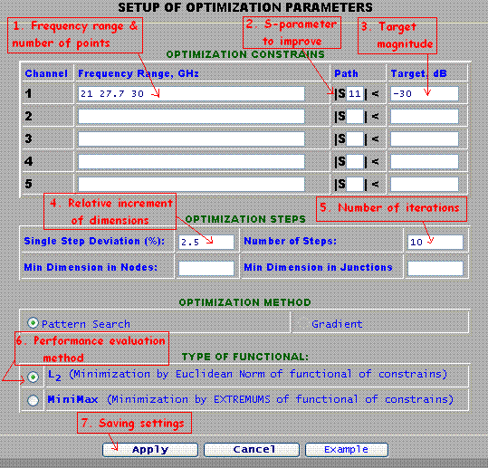
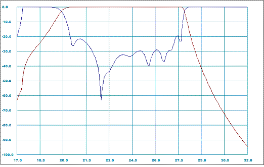
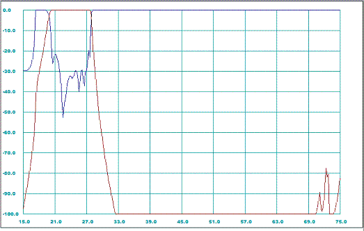

WR-Connect:
Using Optimization to Improve RF Performance
by Rousslan A. Goulouev
Introduction
In the previous article [1] we have shown how to open WR-Connect design project and enter dimensions and configuration of waveguide structure consisting from sections of rectangular waveguides. Then we ran simulations and reviewed the reflection/transmission characteristics corresponding to the dominant and some spurious modes. There We have verified how the inhomogeneous corrugated structure presented by Levy in [2] works and double checked how the results obtained by WR-Connect correlate with the results obtained from software of different type. In other words we used WR-Connect for verification and validation purposes only. In engineering practice there might be often useful verifying properties of particular design or validating use of particular software. However we consider the evolutionary role of design engineers in our technocratic society is creating something new and better serving all of us. In order to create that something better we must come up with a better concept and optimize it in respect to the performance valuables. Therefore all goods invented by mind and created by hands are in continious process of optimization. Let us return to our little task and learn how to improve RF performance of the existing design using basics of optimization tecnique.Conceiving the Optimization Goals and Parameters
Before starting optimization process we need to clearly specify goals of performance improvement and particular tuning elements providing change of performance. Let us again run simulation and take look at near-band frequency response of the filter. Since we have WR-Connect project data in the Table 3 in the previous paper, we can simply transfer it into the text window in File/Import Export page of WR-Connect by common Select/Copy/Paste methods. Then we go to the Initial Setup page and set the simulation bandwidth from 17 GHz to 32 GHz with 500 frequency points. After we saved the new settings, we execute the "Analyze" button on the Structure Editor page and obtain a plot identical with the one on Figure 1 below.
Figure 1: Pre-optimized near-band frequency response characteristics Reviewing the return loss characteristic we can visually recognize potential possibility to improve the return loss over the bandwidth from about 21.0 to 27.7 GHz by pulling down those two ripples at the band edges.
Selecting Variables for Optimization
The first column of the schematic representation data (Table 1) contains the optimization variable keys showing which particular dimension of the node/junction is tunable during optimization process. Last time, whem we ran simulation and observed the plots, we did not need to set those keys and left them zeros. The variable key is set as the number of column of dimensions where the dimension is written;- Length of waveguide section, L
- Width of waveguide section,A/2
- Height of waveguide section, B
- Position of bottom of waveguide,Y
Generally there are no strict rules for selecting optimization variables, so we can deviate any "sensitive" dimension in practically reasonable range. Let us try to tune height of each cavity (key "3" in each junction "2") and distances between cavities (key "1" in each node "1") as it shown on Table 1.
0 1 0.00000 4.32000 1.52000 -0.76000 0.00000
0 1 0.00000 0.00000 0.00000 0.00000 0.00000 0.00000
1 1 1.21000 4.32000 1.16000 -0.58000 0.00000
3 2 1.67000 4.32000 2.59000 -1.29500 0.00000 0.00000
1 1 1.03000 4.32000 0.69000 -0.34500 0.00000
2 2 1.61000 4.32000 3.52000 -1.76000 0.00000 0.00000
1 1 1.00000 4.32000 0.60000 -0.30000 0.00000
2 2 1.59000 4.32000 3.78000 -1.89000 0.00000 0.00000
1 1 1.08000 4.00000 0.55000 -0.27500 0.00000
2 2 1.67000 4.00000 3.80000 -1.90000 0.00000 0.00000
1 1 1.14000 3.81000 0.55000 -0.27500 0.00000
2 2 1.74000 3.81000 3.84000 -1.92000 0.00000 0.00000
1 1 1.13000 3.81000 0.56000 -0.28000 0.00000
2 2 1.74000 3.81000 3.90000 -1.95000 0.00000 0.00000
1 1 1.13000 3.81000 0.56000 -0.28000 0.00000
2 2 1.74000 3.81000 3.84000 -1.92000 0.00000 0.00000
1 1 1.14000 3.81000 0.55000 -0.27500 0.00000
2 2 1.67000 4.00000 3.80000 -1.90000 0.00000 0.00000
1 1 1.08000 4.00000 0.55000 -0.27500 0.00000
2 2 1.59000 4.32000 3.78000 -1.89000 0.00000 0.00000
1 1 1.00000 4.32000 0.60000 -0.30000 0.00000
2 2 1.61000 4.32000 3.52000 -1.76000 0.00000 0.00000
1 1 1.03000 4.32000 0.69000 -0.34500 0.00000
2 2 1.67000 4.32000 2.59000 -1.29500 0.00000 0.00000
1 1 1.21000 4.32000 1.16000 -0.58000 0.00000
0 1 0.00000 0.00000 0.00000 0.00000 0.00000 0.00000
0 1 0.00000 4.32000 1.52000 -0.76000 0.00000
|
Setting Optimization Methods and Targets
After we selected tunable dimensions, we go to the Optimization Setup and specify optimization parameters. First we need to determine the frequency ranges where we are going to improve performance. As it was mentioned above we could improve the return loss (S11) over the filter's pass-band from 21.0 to 27.7 GHz (# 1 on Figure 2) with 30 points (about 5 points per ripple) as much as possible (30 dB for example). The rest of parameters can be set as shown on Figure 2.
Figure 2: Optimization settings
Running Optimization
After we click the "Apply" button, the window will navigate back to the "Structure Editor" frame with controls. The process of optimization can be initiated by clicking the "Optimize" button. Duration of optimization process can take several minutes, but it can be interrupted any time by clicking red "Abort" button. Normally optimization does not require much of computer resources, so the user may surf internet in a separate window or tab. The label on right from the "Ready/Abort" button shows some numbers changing during the process. The numbers show the current optimization step and current performance measure relative to goals and its best value achieved so far.New Results
When optimization process stops and the green inscription "Ready" appears, the old dimensions will be replaced with new dimensions corresponing to the best optimized performance achieved during optimization. We would need to run simulation again (click "Analyze" button) in order to plot the frequency response. In result we achieve improved in-band performance shown on Figure 3 below.
Figure 3: Post-optimized near-band frequency response characteristics Since we tuned the dimensions of filter to achieve better in-bands, the out-of-band performance could have also changed. Therefore the updated structure has to be also simulated over wider frequency range (for example from 15 GHz to 75 GHz).

Figure 4: Post-optimized out-of-band frequency response characteristics As we note the out-of-band performance of the optimized filter is not significantly different from the pre-optimized performance ( see Figure 4 [1]) except better match over the pass-band.
References:
- R. Goulouev, "WR-Connect: Entering Design Parameters and Dimensions", Digoria Microwave, http://www.goulouev.com/connector/page0.htm, Created 10.08.09
- R. Levy, "Inhomogeneous Stepped-Impedance Corrugated Waveguide Low-Pass Filters", Microwave Symposium Digest, 2005 IEEE MTT-S International Volume , Issue , 12-17 June 2005 Page(s): 4 pp.